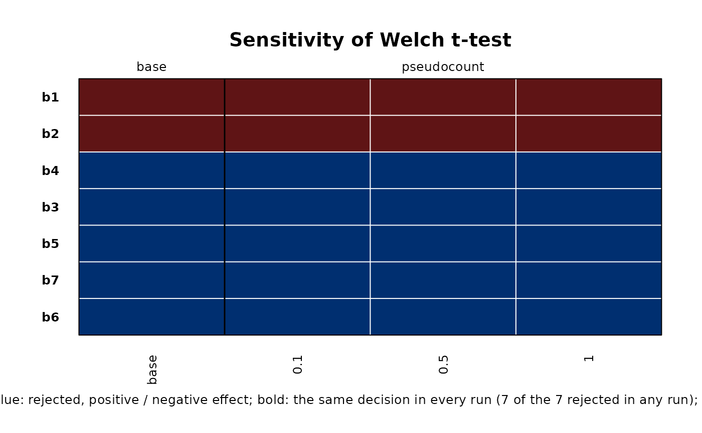
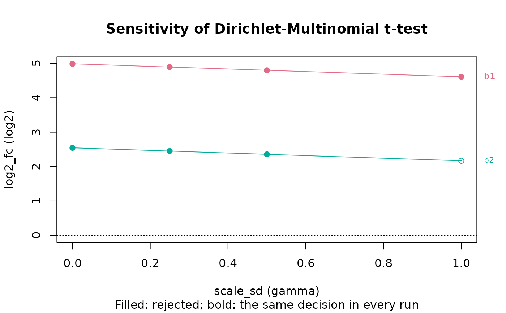

Reruns a differential-abundance (DA) method of da_test() over the
settings that have no right value (the pseudocount, the treatment of
zeros, the assumed variation in total load) and reports, feature by
feature, whether its decision holds in every run.
Usage
da_sensitivity(
counts,
method,
...,
pseudocounts = NULL,
zeros = NULL,
scale_sds = NULL,
crossed = FALSE
)Arguments
- counts
A numeric matrix of non-negative abundances (samples \(\times\) features), or any of the objects listed under Input Types.
- method
The name of a DA method, as for
da_test():"ancom","ancombc","ancombc2","da_lm","da_ttest","da_wilcoxon", or"dirmult_ttest". Flexible matching is supported.- ...
The base run: everything
da_test()takes aftermethod(groups,data,formula) and the method's own arguments (alpha,p_adjust,norm,pseudocount,scale_sd,seed,cpus, ...). Every run is this call with one setting changed.- pseudocounts
Pseudocounts to try:
TRUEforc(0.1, 0.5, 1)(ANCOMBC's), or a vector of positive numbers. Each run sets the method'spseudocount. Default:NULL(none).- zeros
Zero replacements to try:
TRUEfor every method oflist_zero_replacements(), or their names. Each run gives the methodreplace_zeros(counts, z)instead ofcounts, with the method's defaultpseudocount(which adds nothing to a table without zeros). Not for the methods that model counts (zero_free_ok = FALSEinlist_da_tests():dirmult_ttest()). Default:NULL(none).- scale_sds
Scale uncertainties to try:
TRUEforc(0, 0.25, 0.5, 1), or a vector of non-negative numbers. Each run sets the method'sscale_sd, so only for methods that have one (dirmult_ttest()). Default:NULL(none).- crossed
FALSE(the default) to vary one setting at a time around the base run;TRUEfor every combination of the settings. The pseudocounts and the zero replacements are alternative treatments of the zeros, so they are not crossed with each other: each of them is crossed with eachscale_sds.
Value
A data frame of class c('ecodive_da_sensitivity', 'data.frame'), one row per feature (and covariate, for the model
methods) and run, with columns:
feature: the feature's name, as in the method's result.covariate: for the model methods (ancombc(),ancombc2(),da_lm()), the column of the design; every covariate but the intercept is kept.NAfor the group methods.run: the run's number,0for the base run.parameter: what the run changed:'base','pseudocount','zeros','scale_sd', or, withcrossed = TRUE,'crossed'for runs that change more than one.setting: the run's setting in words, e.g."pseudocount = 0.5","zeros = mult","pseudocount = 0.5, scale_sd = 1", or"base".effect: the method's effect size, the column of its result named byeffectinlist_da_tests()(log_fc,log2_fc,median_diff,diff,estimate);NAforancom(), which has none.p_adjusted: the method's adjusted p-value (NAforancom()).reject: the method's own decision, itsrejectcolumn (for ANCOM-BC, notreject_robust).
Attributes:
method: the method's id, e.g.'ancombc2'.effect_name: the name of the method's effect column (NAfor ANCOM).alpha: the base run's significance level.log_base: the base of the effects' logs (exp(1),2, orNAwhen the effects are not logs).covariate: for the model methods, the covariate of the term of interest (the first column ofgroups's term, else the first covariate that isn't the intercept), whichplot()shows by default;NULLfor the group methods.runs: a data frame of the runs, with columnsrun,parameter,pseudocount,zeros,scale_sd(NAwhere the run keeps the base run's) andsetting.fits: the method's result of every run, a list in run order (the base run first). This can take much memory: one full result per run.summary: a data frame with a row per feature (and covariate):feature,covariate,n_runs(the runs with a result for it),n_reject(those that reject it),prop_reject(their proportion),passed(TRUEwhen every run makes the same decision, rejected or not),robust(passedand rejected in the base run: the decisions to report), andsign_stable(TRUEwhen the effect has the same sign in every run where it is finite;NAwithout effects).
Details
Why. A DA result can hinge on a setting with no right value. The ANCOM-BC2 authors strongly recommend their pseudocount sensitivity analysis (Lin & Peddada 2024), and benchmarks find ANCOM-BC2's results among the least replicable without it (Pelto et al. 2025). Assumptions about the samples' total microbial load (the "scale") can break the control of false discoveries in common tools (McGovern et al. 2023; Dos Santos et al. 2026), and Nixon et al. (2025) recommend testing over a range of scale uncertainties. A finding that holds over these settings is firmer than one that holds at a single setting.
The runs. The base run is da_test(counts, method, ...). Each other
run is the same call with one setting changed (or, with crossed = TRUE,
one combination of settings). Every run uses the base run's seed, so
that the runs differ by their settings and not by random draws, and its
cpus; the results are identical for any cpus. Runs other than the
base run of ancombc() and ancombc2() are made with sensitivity = FALSE. Warnings from the runs are given once each, and not when the base
run already gave them.
What each setting means.
pseudocounts: whatpseudocountmeans differs by method. Forancom(),da_wilcoxon(),da_ttest()andda_lm()it is added to every value before the logs, to patch the zeros (for the last three, only withnorm = 'clr'or'log', the norms that take logs). Forancombc()andancombc2()it is added to every value, as in ANCOMBC's own sensitivity analysis. Fordirmult_ttest()it is the Dirichlet prior, added to the counts before the posterior draws.zeros: replaces the zeros withreplace_zeros()instead of a pseudocount, for the methods that take any table of positive values.scale_sds:dirmult_ttest()'s scale model, the standard deviation of the samples' log total load (ALDEx2's gamma):0assumes the loads are the same, larger values allow more variation and give wider intervals.
Relation to ANCOMBC's passed_ss. summary$passed is ANCOMBC's
passed_ss generalised to any method and setting: with method = 'ancombc2' and pseudocounts = TRUE, it is exactly ancombc2()'s
passed_ss (and robust its reject_robust). These pseudocount runs
are the fits behind passed_ss: when the base run already made them
(sensitivity = TRUE, ancombc2()'s default), they are taken from it
rather than fitted again. The ANCOMBC2 vignette's "sensitivity score"
(the proportion of the pseudocount runs whose adjusted p-value is above
alpha) is 1 - prop_reject over those runs.
Plots. plot(x) draws one of two displays (see
plot.ecodive_da_sensitivity()): "tiles" (the default) shows each
feature's decision (rows) in every run (columns), coloured by the sign of
the effect where the run rejects it, with the features whose decision
never changes in bold; "traces" shows each feature's effect against one
setting's values, with filled points where the run rejects it (for
scale_sds, the display of ALDEx2's plotGamma()).
Input Types
The counts parameter is designed to accept a simple numeric matrix, but
seamlessly supports objects from the following biological data packages:
phyloseqrbiomSummarizedExperimentTreeSummarizedExperiment
For large datasets, standard matrix operations may be slow. See
vignette('performance') for details on using optimized formats
(e.g. sparse matrices) and parallel processing.
References
Lin, H., & Peddada, S. D. (2024). Multigroup analysis of compositions of microbiomes with covariate adjustment and repeated measures. Nature Methods, 21, 83-91. doi:10.1038/s41592-023-02092-7
Nixon, M. P., Gloor, G. B., & Silverman, J. D. (2025). Incorporating scale uncertainty in microbiome and gene expression analysis as an extension of normalization. Genome Biology, 26, 139. doi:10.1186/s13059-025-03609-3
Dos Santos, S. J., Murariu, A. C., Silverman, J. D., & Gloor, G. B. (2026). Not every gene is special: modelling scale controls the false discovery rate. PLoS Computational Biology, 22(9), e1014728. doi:10.1371/journal.pcbi.1014728
McGovern, K. C., Nixon, M. P., & Silverman, J. D. (2023). Addressing erroneous scale assumptions in microbe and gene set enrichment analysis. PLoS Computational Biology, 19(11), e1011659. doi:10.1371/journal.pcbi.1011659
Pelto, J., Auranen, K., Kujala, J. V., & Lahti, L. (2025). Elementary methods provide more replicable results in microbial differential abundance analysis. Briefings in Bioinformatics, 26, bbaf130. doi:10.1093/bib/bbaf130
See also
da_test(), replace_zeros(), plot.ecodive_da_sensitivity();
ancombc2()'s sensitivity.
Examples
x <- rbind(
c( 20, 110, 100, 101, 100, 103, 104),
c( 33, 110, 120, 100, 101, 100, 102),
c( 12, 110, 100, 110, 100, 50, 90),
c(202, 201, 9, 10, 10, 11, 11),
c(200, 202, 10, 10, 13, 10, 10),
c(203, 201, 14, 10, 10, 13, 12) )
colnames(x) <- paste0('b', 1:7)
grp <- rep(c('treatment', 'placebo'), each = 3)
# Does the t-test's answer depend on the pseudocount?
res <- da_sensitivity(x, 'da_ttest', grp, pseudocounts = TRUE, cpus = 1)
res
#> # A data.frame: 28 × 8
#> # Sensitivity of Welch t-test
#> feature covariate run parameter setting effect p_adjusted
#> <chr> <chr> <int> <chr> <chr> <dbl> <dbl>
#> 1 b1 NA 0 base base 3.47 0.0099
#> 2 b2 NA 0 base base 1.76 0.00404
#> 3 b3 NA 0 base base -1.13 0.00919
#> 4 b4 NA 0 base base -1.18 0.0114
#> 5 b5 NA 0 base base -1.06 0.00711
#> 6 b6 NA 0 base base -0.808 0.0284
#> 7 b7 NA 0 base base -1.04 0.000508
#> 8 b1 NA 1 pseudocount pseudocount = 0.1 3.46 0.00985
#> 9 b2 NA 1 pseudocount pseudocount = 0.1 1.75 0.00408
#> 10 b3 NA 1 pseudocount pseudocount = 0.1 -1.13 0.00894
#> # … 18 more rows
#> # … 1 more column: reject <lgl>
#> # Use print(x, n = ...) to see more rows
#> # Attributes: method, effect_name, alpha, log_base, runs, fits, summary
attr(res, 'summary')
#> feature covariate n_runs n_reject prop_reject passed robust sign_stable
#> 1 b1 <NA> 4 4 1 TRUE TRUE TRUE
#> 2 b2 <NA> 4 4 1 TRUE TRUE TRUE
#> 3 b3 <NA> 4 4 1 TRUE TRUE TRUE
#> 4 b4 <NA> 4 4 1 TRUE TRUE TRUE
#> 5 b5 <NA> 4 4 1 TRUE TRUE TRUE
#> 6 b6 <NA> 4 4 1 TRUE TRUE TRUE
#> 7 b7 <NA> 4 4 1 TRUE TRUE TRUE
plot(res)

# The Dirichlet-multinomial t-test over scale uncertainties (gamma).
res <- da_sensitivity(
x, 'dirmult_ttest', grp, scale_sds = TRUE, n_draws = 32, cpus = 1 )
plot(res, 'traces')
